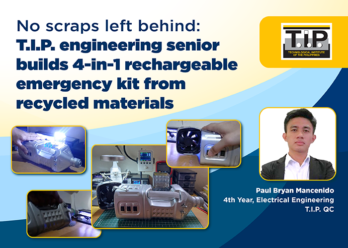

NEWS
No Scraps Left Behind: T.I.P. Engineering Senior Builds 4-In-1 Rechargeable Emergency Kit From Recycled Materials
 Modern problems require simple solutions.This is what Paul Bryan Mancenido, an electrical engineering senior from the Technological Institute of the Philippines (T.I.P.), proved with his 4-in-1 rechargeable emergency kit built from scraps.
The device – which won him the grand prize in T.I.P.'s Environmental Fair, and which recently caught the attention of media giant GMA 7 – features a handy flashlight, lamp, electric fan, and USB charging port all rolled into one.
"My mantra has always been not to let go of scrap materials just yet. They can still be reused and recycled, especially now when we can't easily go out due to the pandemic," Mancenido said, recalling that rainy day he thought of making his novel invention.
As an only child, Mancenido grew up playing and experimenting with broken motor parts. His father is an air-conditioning mechanic, while his mother is a housewife. When he was younger, he would often repair devices for free. This hobby would continue on up to college, when Mancenido realized that he wanted to build a career and a legacy out of it.
"People would belittle my ideas sometimes, and even my parents would caution me every now and then; but I know in my heart that I've got something to give. They may not understand it now; but someday, when I'm already a full-fledged manufacturing engineer, they will," Mancenido said.
The thought of contributing largely to society did not sink in until Mancenido himself saw his work on national television. Congratulations were immediately in order for the humble student from San Mateo, Rizal. Years of failures and self-conceptualizing have somehow bore fruit, and this is just the beginning. The kid is only getting started.
As he nears graduation, Mancenido looks back on his journey as a T.I.P.ian. It was the institute's laboratories that inspired him to dream, and it's also how he envisions his future workspace to be.
Ariel Magat, program chair of T.I.P.'s electrical engineering department, lauded Mancenido's 4-in-1 rechargeable emergency kit, saying this multifunctional invention made from scraps shows that "breakthroughs doesn't necessarily mean discovering new things, it may also be about looking at improving those around us."
"Mr. Marcenido's project would definitely open up other bright ideas from our students and other young inventors out there. This would encourage them to explore integration of various concepts and technology – things that are already on hand but just waiting to be tapped and reproduced into innovative tools, gadgets, or equipment," he added.
For more information on T.I.P., please visit tip.edu.ph or T.I.P.'s official social media accounts through @TIP1962official for Facebook, Twitter, and Instagram.
Back to News Navigation